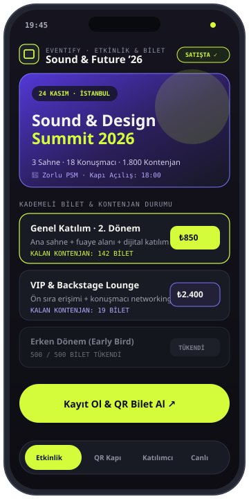
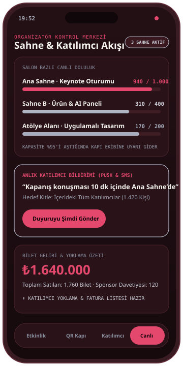

EKRAN 01 · BİLET & KAYIT
Kademeli bilet & kontenjan
Erken dönem, genel katılım ve VIP kategorileri, kalan kontenjan sayaçları ve anında dijital QR bilet üretimi.

Zirveler, festivaller, kurumsal lansmanlar ve topluluk buluşmaları için etkinlik sayfası oluşturmayı, kademeli bilet/davetiye yönetimini ve saniyeler süren saha QR kapı kontrolünü tek bir akışta birleştirir.


Etkinlik günü kapıda internet yavaşladığında duran listeler ve hangi salonda kaç kişinin bulunduğunun bilinememesi organizasyon ekiplerinin en büyük stres kaynağıdır. Eventify, çevrimdışı önbellekli QR doğrulama motoruyla kapı geçişini hızlandırır ve salon yoğunluğunu canlı izletir.
Eventify’ın katılımcı bilet ekranını, saha görevlisi QR okuyucusunu ve organizatör canlı kontrol merkezini örnek verilerle gösteren ekranlar.
Erken dönem, genel katılım ve VIP kategorileri, kalan kontenjan sayaçları ve anında dijital QR bilet üretimi.
Mükerrer giriş korumalı hızlı QR tarama, VIP/Backstage yetki rozeti ve yaka kartı baskı tetikleyicisi.

Salon bazlı doluluk çubukları, içerideki katılımcılara anlık bildirim gönderimi ve etkinlik sonu yoklama raporu.
Görsellerdeki etkinlik adı, bilet fiyatları ve katılımcı sayıları tanıtım amacıyla kurgulanmış örnek verilerdir.
Biletli zirvelerden kapalı kurumsal davetlere kadar tüm saha ve kayıt operasyonunu kapsar.
Konuşmacı listesi, çoklu sahne/oturum takvimi, konum bilgisi ve markaya özel açılış sayfası kurgusu.
Dönemsel bilet kademeleri, sponsor/basın kontenjanları, indirim kodları ve özel LCV davetiye akışları.
Bağlantı kopsa dahi yerel kriptografik doğrulama ile saniyeler içinde geçiş sağlayan mobil saha uygulaması.
Gerçek zamanlı check-in istatistikleri, oturum hatırlatmaları ve etkinlik sonrası detaylı katılım raporları.
Eventify, tekil etkinlikler veya yıl boyu süren topluluk serileri için yapılandırılabilir.
Kademeli kayıt/bilet oluşturma, mükerrer giriş engelleme ve canlı giriş sayacı.
QR okutulduğu anda termal yazıcıdan yaka kartı basımı ve paralel yan salon kapasite kontrolü.
Etkinlik içi tanışma eşleşmeleri ve sponsor stantları için QR ile izinli iletişim paylaşımı.
Konferans, lansman veya topluluk etkinliğin için Eventify’ı denemek ya da özel ihtiyaçlarını konuşmak için bize yazabilirsin.